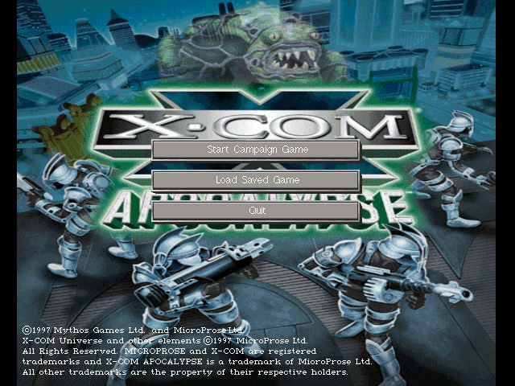
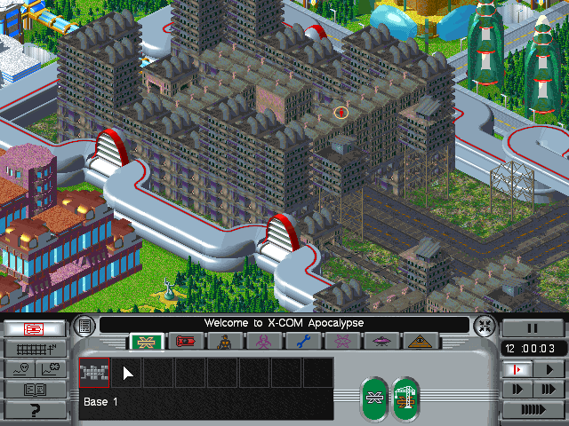
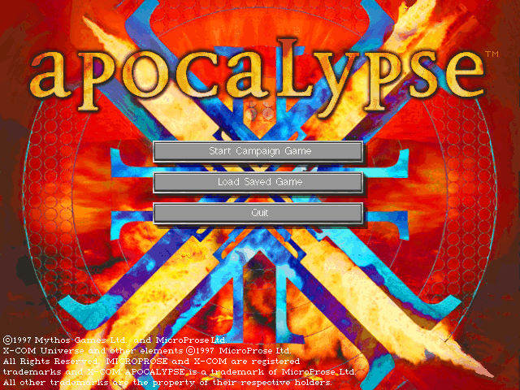

名稱：幽浮3：啟示錄／天啟 (X-COM: Apocalypse，英文版)
簡介：Mythos 1997年出品的即時戰略與回合制戰術遊戲，由MicroProse代理發行，台灣則由
第三波代理進口，但並未中文化 [待補]。



保護：光碟
備註：遊戲主標題背景圖有分藍底和紅底兩種，第三波代理版為1997/6/26藍底，國外原始版
為1997/6/20紅底，兩者內容相同，背景圖不同。另有1998/8/5再版紅底，執行檔不同，
多了手冊，其餘均相同。